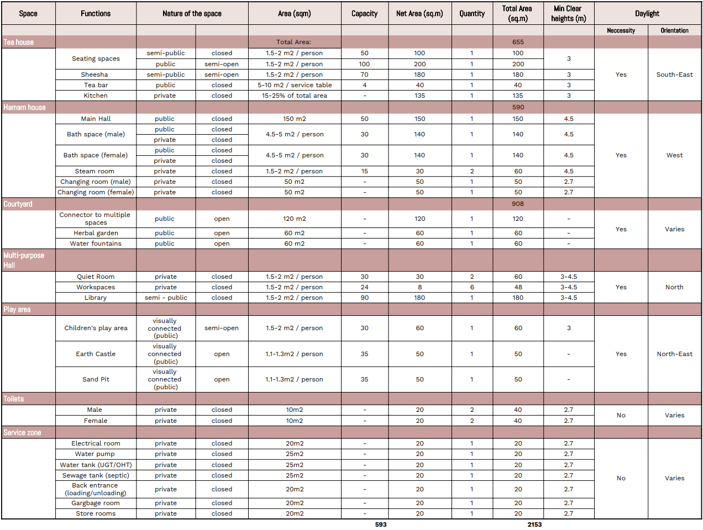
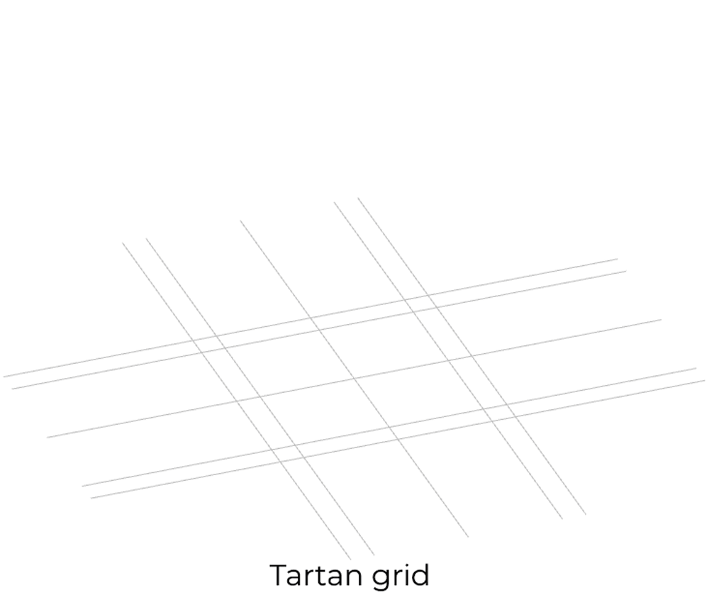
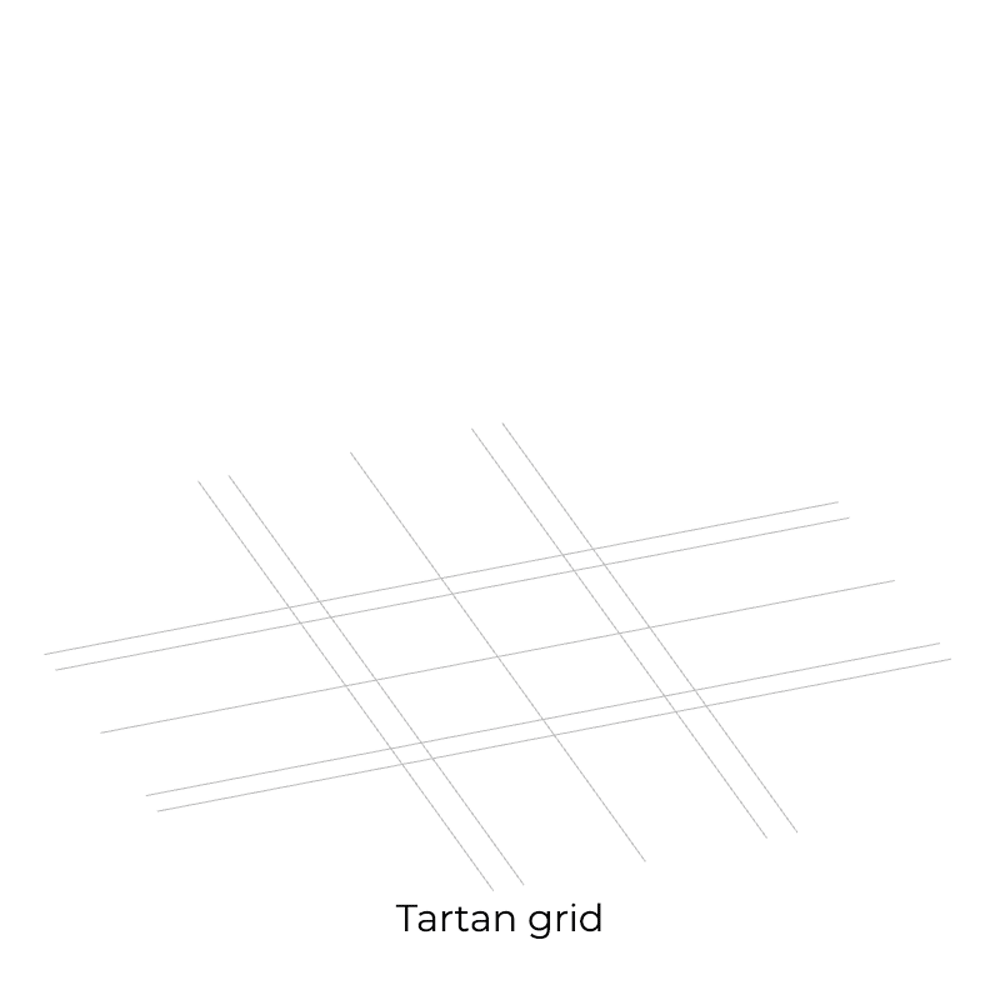

Design
0_Introduction Beza
general text about the project and brief of the project.(also talk about the site) leading to the problem statment
About Zaatari
text text site study
Problem statement
talk about the problems we hope to tackle
Design goal
xxxxxx intervention
Design vision
ssssss Ease construction due to unskilled whatever else
Overall flow chart
This flowchart shows the overall procedural workflow adopted for designing Raha. The whole project is divided into four stages, Congifuration, Forming, Structuring and Constructability respectively.
The larger division of stages offers an eventual progression of the design by keeping each stage in coherence and informed with the other to achieve a generative design.
1_Configuration
introduction explaining the configuring phase and its goals.(from course brief)Anagha
Site selection Beza
flowchart
Course Brief's demand @Beza please cover these points: Analysis: Analyse the site in terms of intensities of population, activities, highlighting the infrastructure and seeking to reveal the invisible connections as well as flows of people and goods between points of interest.
Synthesis: Interpret the analyses and put them together to form a conclusion regarding how things work right now.
Evaluation: Identify the missing buildings and the connections that need to be strengthened or improved.
Proposition: Propose a list of communal buildings or mega buildings (such as bazars) to be designed and then envision and list stages of spatial improvements that can be feasibly realized by the community.
beza's gif
explaining how we came to the selection of this site. Explain with apt conclusion why district 9 was chosen, link it to the site study.
Twinkle
Explain the site surroundings and site orientation, add a google map/diagram - wind and sun path (brief study)
Program of requirements Thijmen
 Click here to open the PDF
Having selected a site to fit the Raha building a program was developed.
with the functions that are to be hosted in the building came also some demands on capacity, size, level of privacy, and desire for daylight. Below these choices will be explained.
Tea house
The tea house is one of the main functions of Raha. Its purpose is to connect people and provide them with a place where they can meet and socialize.
To do so there will be two seating spaces, a public one and a private one to allow for more intimate conversations. Together they will have a capacity for 150 people. They will be located ad the southeastern part of the building to have propper daylight which helps create the ambiance required.
There will also be a tea bar and kitchen located in this area to provide visitors with food and drinks. These functions will have to be close to a separate entrance for them to be provided with supplies. Daylight is a necessity in the kitchen but it would help to reduce the need for artificial light.
To make sure that visitors with kids are also welcomed there will be an indoor and outdoor play area for the children.
All of these functions will be connected with a courtyard, named the herbal garden this courtyard can provide herbs for the tea that is being served in the tea house. Visitors are welcome to help with the gardening of this garden.
There will also be some toilets connected to the herbal garden.
Hammam
The hammam is a more secluded part of the Raha building, it is there to provide comfort hygiene for male and female the layout of the hammam will be the same and as follows.
From the Waterbody courtyard, you enter the main hall and entrance of the hammam.
Where you can get your towels and go through to the changing room to continue either to the steam room, or the public or private bath spaces.
All of these rooms require good ventilation and daylight but are private so this should be taken into account when designing said room.
The hammam as a whole can host up to 125 people.
Quiet area
Also located next to the waterbody courtyard is the quiet area. The quiet area hosts the next functions.
The quiet rooms where people can come, sit, read, and enjoy a quiet space.
There is also a library to provide visitors with books to read.
And several workspaces for the visitors to use.
All of these rooms require daylight but it should not be disturbing this is why a north orientation is chosen for these rooms.
There will also be toilets connected to the waterbody courtyard.
Entrance
Of course the project needs an entrance, when entering the site visitors will first walk into the water fountain courtyard. From which they can choose to go to the waterbody courtyard or the herbal garden courtyard.
Service zone
To provide all the functions from there required services like heating, water, power, storeroom, etc. There will be a service zone that has his separate entrance and is connected to the hammam, tea house, and water fountain courtyard.
Connectivity of spaces
After deciding which functions should be in the project to achieve our vision the relations between these functions were studied. To do so we went through the next steps multiple times untill the the project relations were coherent.
Rel chart
 The REL chart shows the relationship a certain function or room has with every other function or room. In the beginning, assumptions were made on which function should be connected to which other function. By analyzing the results this chart was changed to make sure it provided a better input for our syntactic tool.
The REL chart shows the relationship a certain function or room has with every other function or room. In the beginning, assumptions were made on which function should be connected to which other function. By analyzing the results this chart was changed to make sure it provided a better input for our syntactic tool.
Bubble diagram
Taking the REL chart created in the previous chapter the connections were analyzed using a bubble diagram.
Starting with the syntactic tool for Rhino Grasshopper.
To make the process of checking and rechecking more automated rather than building a new bubble diagram each time. A script was created to generate points and their connections based on the connections in the REL chart.
 \
Dots and lines generated by the output of the REL chart, this will be input for the syntactic tool.\
\
Dots and lines generated by the output of the REL chart, this will be input for the syntactic tool.\
 \
The script is used for generating the lines between the dots, based on the value implied in the REL chart.\
\
The script is used for generating the lines between the dots, based on the value implied in the REL chart.\
 \
This bubble diagram was studied and connections were moderated if necessary. However, it did not provide us with the clear bubble diagram that we were expecting from the program. So we converted it into a manual bubble diagram. This also gave us the option of giving a certain weight to the connections as is shown below.\
\
This bubble diagram was studied and connections were moderated if necessary. However, it did not provide us with the clear bubble diagram that we were expecting from the program. So we converted it into a manual bubble diagram. This also gave us the option of giving a certain weight to the connections as is shown below.\
 \
Final bubble diagram.
\
Final bubble diagram.
Hierarchy of spaces
After creating the bubble diagrams we analyzed them. To do some more effectively we looked at the hierarchy of the spaces as this gives a good view of how private the rooms are and how long it would take a visitor to reach them.
Depth chart\
 \
The depth chart as shown above clearly shows the hierarchy of the spaces. For instance, it shows a clear split between the hammam areas and the tea bar areas. It also shows how deep the bathing spaces are in the building. Which is where they are designed to be.
\
The depth chart as shown above clearly shows the hierarchy of the spaces. For instance, it shows a clear split between the hammam areas and the tea bar areas. It also shows how deep the bathing spaces are in the building. Which is where they are designed to be.
Metro link diagram
 \
To show the connections on a very conceptual level a metro link diagram was created as can be seen above.\
\
To show the connections on a very conceptual level a metro link diagram was created as can be seen above.\
 \
To show the clustering of the functions this diagram was transformed into a hexagonal connectivity chart which is shown above.
\
To show the clustering of the functions this diagram was transformed into a hexagonal connectivity chart which is shown above.
Summary or conclusion
First do the rest
The functions and there relationships that are created in this chapter will be the input for the next chapter were the building layout will be formed.
2_Forming
introduction explaining the configuring phase and its goals.(from course brief)Anagha
Spacial configuration
Gradient descent optimization
Anagha
Video/gif, excel, flowchart of the script and explanation
in 2D
3D Study
 Fig: 3D Visualisation of connectivity of spaces
Fig: 3D Visualisation of connectivity of spaces
It was neccessary to analyse the 2D configuration in a 3D space to determine the adjacencies and connectivity in the horizontal and the vertical plane. The outputs generated from the computational tool were used as an input for this study.
First step was to study the ratio between the built v/s unbuilt spaces and define the proportions of the unbuilt spaces depending on the widths of the adjacent built spaces. Next step was to connect the built and the unbuilt spaces and understand the nature of the connection. This was determined by analyzing if the connection was an exterior, interior, horizontal or vertical connection. Once the connections are defined, the walls were extruded. Certain spaces like the quiet rooms, workspaces and the sheesha were placed on the first floor as the nature of the space determined it's position. As the quiet rooms and the workspaces required a quiet and calm environment and the sheesha required an open to sky configuration, the spaces were placed on the first floor.
Configured design
Modular grid
Twinkle
talk about the grid 1.2m we first choose and how it transformed into the tartan grid explain why initially bands of 600mm was assumed- based on last years reference and our room sizes.
Floor plans
show (general) floor plans and there plan evolution (study on the courtyards and therfore the configuration that was informed)
Siteplan
showing the site plan of the building and its surrounding, and the orientation (start with the first one and show how it evolved)
Wall modules
explain how the walls have been designed according to the tartan grid.
including the change of wall tickness (why we choose for 600mm bands in the tartan grid)
roof modules
talk about Architectural charactaristics and show the different roof modules in the plan view - 4 types Crossvaults, Square domes, Rectangular domes and Domes with Skylight
talk about how these roofs have been designed using the tarten grid
Sections
show sections and explain the heights etc
details
Services
Ventilation
Detailed section
Summary or conclusion
3_Structuring
Introduction explaining the configuring phase and its goals.(from course brief)Anagha
Tesellations
 Fig: Tessellation process flow chart
Fig: Tessellation process flow chart
Exploration
Manual
Shriya and Beza
 Fig: Exploration of different meshing techniques
Fig: Exploration of different meshing techniques
The form finding was determined by the study of architectural characteristics of different spaces. To start the process and understand how different meshes gave different shapes, a thorough literature study was conducted. During this process, we considered a roof form and it's corresponding size, and manually meshed the initial divisions. The initial divisions followed a logic which was derived from the literature research. Different types of meshing logic was explored initially and were imported in the kangaroo solver to generate the dynamically relaxed form. Different meshing logic gave a different result, for example, the quad split logic generated a curved peak while the triangulation logic generated a pointed peak. This step was repeated for every type of meshing logic and the triangulation meshing logic was chosen as it closely resembled the desired form. Later these meshes were imported in the kangaroo solver to sub divide the initial meshes and generate the dynamically relaxed form.
Explain the different types of tesselations (dome/cross vault Jpegs) and meshing logic/strategy
Computational
Thijmen
Explain the mesh maker 4000, flowchart and the dynamic relaxation strengths and anchors, etc per module - total number of modules 7 + 1 (3- square domes, 3 rectangular domes,1 cross-vault, +1 is dome with skylight (Adobe 2.0))
Mention the challenge with dome with Skylight and why it wasnt possible to relax an opening within the dome.
Final Tesselation
Roof
 Fig: Showing the initial roof tessellations
Fig: Showing the initial roof tessellations
As the triangulation meshing logic was chosen initially, after dynamically relaxing the meshes, we realized that the form generated failed to perform well structurally. The dynamically relaxed roof did not transfer the loads uniformly and developed peak tensile stresses at the edges of the walls. Moreover, the meshing logic did not work well for larger spans as it generated fairly flat surface at the top of the dome which gave rise to peak tensile stresses at the highest points of the roof.

Fig: Showing the final roof tessellations from wall centerlines

Fig: Showing the final roof tessellations seperated by the wall thickness
The final tesselation logic was a combination of constant quad split and triangulation method. This logic was structurally analyzed and worked well structurally as the load distribution was uniform and peak tensile stresses generated were considerable. Moreover, this logic closely resembled the desired form and maintained the form irrespective of the span.
Walls
 Fig: Wall tessellations
Fig: Wall tessellations
Though a computational method was used for the roofs, for the walls we opted a manual approach. The meshes for the walls were generated using the initial divisions of the roof mesh. The intersecting points between the roof and the wall determined the mesh lines for the walls. These mesh lines became the guideline for the division of the arched opening in the wall. A similar mesh logic was applied in the wall meshing as done for the roof meshes; constant quad split and triangulation method. Once the walls with the openings were meshed, walls without openings followed the mesh lines of the later. After the initial meshing of the walls, they were imported to weaverbird in grasshopper to sub divide the initial meshes and make the meshes more coarse and match them with the roof meshes.
Simplification
Square domes
 Fig: Evolution of the dynamically relaxed form
In order to achieve a smooth form and for the ease of construction, the dynamically relaxed form was refined further. The inital tesselataion, based on the tartan grid, was approximated and simplified to the closest curve resembling the generated mesh. These curves were used to build the final surface of the roof which was later analyzed in karamba 3D for structural calculations.
 Fig: Simplification logic of Square domes
Fig: Simplification logic of Square domes
The dynamically relaxed form was refined under a specific geometry in order to ensure accuracy in construction. Each curve of the form was re-drawn to the closest ellipse. These ellipses were made using the edge points of the meshes and then cut into half to derive the elliptical curves. For the square domes, two types of ellipses were used: one ellipse in the vertical and horizontal direction and one for the diagonals. The final surface was generated using these elliptical curves and imported to weaverbird in grasshopper for further refinement.
 Fig: Simplification logic of Square domes
Fig: Simplification logic of Square domes
This logic was repeated for the other square domes: 6 x 6 M and 9 x 9 M. The curves were scaled twice for the 6 x 6 m dome and thrice for the 9 x 9 m dome. In case of 9 x 9 m dome, additional curves were drawn to match the initial tesselations and for structural stability.
Rectangular domes
 Fig: Evolution of the dynamically relaxed form
Fig: Evolution of the dynamically relaxed form
Similar logic was applied for the rectangular domes.
 Fig: Simplification logic of rectangular domes
Fig: Simplification logic of rectangular domes
In case of rectangular domes, two different ellipses were made. One ellipse was made in the center dividing the top ridge into 2 parts and the second ellipse was drawn from the corners of the rectangle, creating a slight curvature on the smaller sides of the ceiling.
 Fig: Simplification logic of rectangular domes
Fig: Simplification logic of rectangular domes
This logic was repeated for the other rectangular domes domes: 6 x 3 M and 9 x 6 M. The curves were scaled twice for the 6 x 3 m dome and thrice for the 9 x 6 m dome. In case of 9 x 6 m dome, additional curves were drawn to match the initial tesselations and for structural stability.
Cross vaults
 Fig: Evolution of the dynamically relaxed form
The dynamically relaxed form was refined under a specific geometry in order to ensure accuracy in construction. Each curve of the form was re-drawn to the closest catenary arc. These arcs were made using the edge points of the meshes and then cut into half to derive the catenary curves. For the cross vaults, only one catenary arc was used to generate the surface. The final surface was generated using these elliptical curves and imported to weaverbird in grasshopper for further refinement.
 Fig: Simplification logic of cross vaults
Fig: Simplification logic of cross vaults
Material Selection
Due to the change in the course structure due to Covid-19, material research and testing was not part of the brief. We referred to the tests and anlaysis done by the previous year students of the same course. We primarily considered the test results of Bustan group (Group 5) and chose the same materials and material limit states for our project.
 Fig: Material composition
Fig: Material composition
The adobe bricks should be made by the refugees at the camp site with the available materials. The recipe for the standard brick composition were 30% clay, 30% fine sand, 40% coarse sand and 10% water of the total weight of the dry ingredients. Additionally, straw was chosen as an addition to the adobe paste to improve the tensile strength of the brick. The straw was added in the percentage of 10% of the total mixture. The final mixture was then placed in the required moulds and allowed to dry to make the bricks. The mortar was also prepared with the same basic composition with higher percentage of water as required to make the sticky paste. (Bustan,2019)
 Fig: Design Values
Fig: Design Values
The limit states of the material were obtained from a research paper (Clifton, J. R., & Davis, F. L., 1979.) and Last year's material report written by Bustan group (group 5). From the literature study (Clifton, J. R., & Davis, F. L., 1979) we concluded that safety factor within the range 1.2-2 is ideal in this case. In case of addtional floors above, safety factor of 4 was considered.
Strcutural Analysis
 Fig: Structural analysis process flow chart
Fig: Structural analysis process flow chart
Process
 Fig: Initial approach for structural analysis of the structure
Fig: Initial approach for structural analysis of the structure
Structural analysis of the generated geometry was implemented in Karamba 3D in grasshopper. The structural analysis process was carried out in 2 stages. In the first stage, the chosen dynamically relaxed form was placed over the vertical base after which the wall and the roof meshes were merged to form a uniform mesh. This uniform mesh became the input for the karamba analysis.
It was observed that the load distribution was not uniform as we observed peak tensile stresses at the edges of the wall and irregularity in the load distribution in the roof. This was due to irregular surfaces and meshes generated from dynamic relaxation. Moreover, the ridge between the wall and the roof was visible distinctly, therefore, the wall and the roof meshes were not coherent.
 Fig: Final approach for structural analysis of the structure
Fig: Final approach for structural analysis of the structure
In the second stage, the simplified surface of the wall and the roof was chosen for further analysis. In this case, the wall and the roof were analyzed separately. First the roof was analysed using the simplified geometry. The reaction forces from the roof were given as an input to the wall analysis along with the self weight of the wall. The wall was then analyzed.
It was observed that the load distribution was uniform and the meshes were coherent. The peak stresses developed at the edges and the corners of the wall were within the set limits and the transition between tension and compression was logical and regular. High compression at the bottom of the wall and at the top of the roof and tension at the corners and the edges of the wall determined the analysis was performed correctly. Moreover, the analysis proved that the roof can be made into a completely compression roof which fulfilled the ultimate goal.
Module_1
Loadcases: Explain the load coonditions considered
Support conditions
Results
Verification
Module_2
Loadcases: Explain the load conditions considered
Support conditions
Results
Verification
Module_3
Loadcases: Explain the load coonditions considered
Support conditions
Results
Verification
Module_4
Loadcases: Explain the load coonditions considered
Support conditions
Results
Verification
Module_5
Loadcases: Explain the load coonditions considered
Support conditions
Results
Verification
Module_6
Loadcases: Explain the load coonditions considered
Support conditions
Results
Verification
Module_7
Loadcases: Explain the load coonditions considered
Support conditions
Results
Verification
Module_8
Loadcases: Explain the load coonditions considered
Support conditions
Results
Verification
Summary or conclusion
4_Constructability
Introduction explaining the construction phase and its goals.(from course brief)Bez
Methodology
relationship between different modules
Beza
Explaining the scalable difference between each module, therfore each curve is double of the other, Mention how they are Different yet similar a the same time.
Rib system approach
Beza
Selection of construction using ribs + infill method
Interlocking bricks
system exploration
Beza and Twinkle
The different interlocking systems researched refer to appendix when neccessary to ensure that the information here is not too much. then add teh table ranking the different interlocking systems studied and tehrefore choosing the one we did
design process Beza
Manual study Beza Starting from the circular arch to the elliptical arc taht forms the Dome ribs.
Computational tool development
Thijmen
Flowchart of the script
Include the GIF
The adaptation of the tool for various modules
Experiment
Twinkle and Anagha
Add video and talk about teh brick infill making and 3d printing of the blocks
Construction instrument
Twinkle
General concept and deisgn of the tool
Adaptation to different modules
Adobe 2.0
Design concept
Twinkle
mention fibonacci and the twist in the dome that creates the lamela dome look
Computational tool
Anagha
Script flowchart Include the GIF and explanation.
Construction instrument
Twinkle
General concept and deisgn of the tool
Brick Library
Twinkle
Brick sizes and weights to be justified for constructability - Brick Library with dimensions weights and moulds - which one is used where (which module)
In a 3D view colour code and nomenclate the bricks used per module
construction sequence
Beza
All the lovely Gifs and explanation of the process it selft
Foundation to walls to window/door openings and therefore roof modules
Square domes
Gif.
3d image of the brick colour and nomenclature
Rectangular domes
Gif.
3d image of the brick colour and nomenclature
Cross vaults
Gif.
3d image of the brick colour and nomenclature
Adobe 2.0
Gif.
3d image of the brick colour and nomenclature
Summary or conclusion
5_Conclusion
6_Reflection
While going through the process of designing an earthy building as is being explained above a lot was learned. Below each group member will reflect on the process and how they have experienced it.
Anagha Yoganand
reflection
Bezawit Z. Bekele
reflection
Shriya Balakrishnan
reflection
Thijmen Pluimers
reflection
Twinkle Nathani
reflection